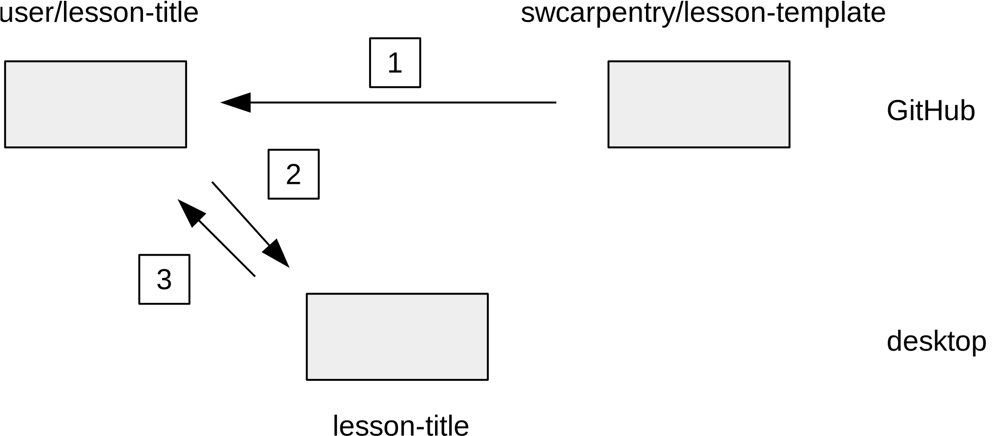

January 2015

What
Create a new lesson for Software Carpentry
https://github.com/swcarpentry/lesson-template
Why
- Modularize lessons like software libraries
- Ensure uniform appearance and metadata
- Simplify contribution
How
- Create a brand new repository on GitHub
- Clone to desktop
- Pull content from
lesson-template - Edit and check
- Push to repository's
gh-pagesbranch
How
Why?
- A user can only fork a repo once on GitHub
- But authors may work on many lessons
- So we have to manage remotes on the desktop
How It Works
- Make detects out-of-date Markdown files
- Pandoc converts them to HTML
- GitHub publishes HTML in the
gh-pagesbranch
Why Not Jekyll?
- Workshop websites use Jekyll to create HTML
- But its Markdown lacks features we want
-
And we have to do some conversion anyway
- IPython Notebooks
- R Markdown
1. Create Repository
- Not a fork of
lesson-template - Name it topic-level or topic-level-something
- Can be owned by anyone
2. Clone to Desktop
$ git clone git@github.com:user/some-lesson.git
- Make sure you're not already in a Git repository
3. Get Template Content
- Make connection to template directory
$ git remote add template https://github.com/swcarpentry/lesson-template.git
- Call it
templaterather thanupstream
3. Get Template Content
- Make a
gh-pagesbranch
git checkout -b gh-pages
3. Get Template Content
- Pull down the template
$ git pull template gh-pages
4. Edit...
- See the README for general instructions
- And lesson layout for details
- There are notes on design
- And an FAQ (additions welcome)
4. ...and Check
make check: Validate pages
5. Push to Publish
- Push to website
$ git push origin gh-pages
- Check
http://user.github.io/some-lesson/
What's in the Template?
- Description of required files and formatting rules
- Example files
- Some you'll edit (e.g.,
index.html) - Some you'll delete (e.g.,
01-one.md) - Discussed in detail below
- Some you'll edit (e.g.,
- Validation tool
- Please run this before pushing changes
A Simpler Way to Start
git pull template coreomits example files- Still pull into the lesson's
gh-pagesbranch - Will pull from
coreto get updates- Because pulling from template's
gh-pageswould bring back example files that you probably deleted
- Because pulling from template's
When Wrong is Right
- We put generated HTML in the same branch and directory as Markdown source
- Generally a bad idea...
- ...but means paths to image and data files are the same in both...
- ...and avoids cross-branch compilation
Source Formats
- IPython Notebooks are difficult to diff and merge
- Other formats (e.g., reStructured Text) are only used by one community
You can write in anything you want
as long as you translate it into Markdown
that conforms to our style guide
Template Contents
README.md
- Initially a copy of the template's README
- Overwrite with a short description of the lesson
- Please also include the text below
> Please see https://github.com/swcarpentry/lesson-template > for instructions on formatting, building, and submitting lessons, > or run make in this directory for a list of helpful commands.
Template Contents
Makefile: do common operations
make: Display available commandsmake check: Validate formattingmake pages: Build pagesmake settings: Show variables and settingsmake clean: Clean up junk files
Template Contents
A handful of mandatory files
index.md: lesson's home pagediscussion.md: general discussion and pointersinstructors.md: instructor's guidemotivation.md: slideshow motivating lessonreference.md: reference guide for learners
Template Contents
nn-topic.md: topics within lesson
- E.g.,
01-select.md - Each should be 10-15 minutes long
These are for instructors and offline reference,
not to be shown to learners during teaching
Template Contents
Sub-directories for lesson files
code: source codedata: data filesfig: figures
Template Contents
Sub-directories for template files
css: style filesimg: stock images (e.g., logos)js: Javascriptdeck.js: Javascript for slideshows
These files are updated by pulling from the template's core branch
Template Contents
Sub-directories for formatting
_layouts: page templates_includes: included HTML snippets- Named to be consistent with
workshop-template
Template Contents
Sub-directory for tools
checkvalidates formatting- We will add others soon
Existing Lessons
Improving the Template
- Fork
lesson-templateand send pull requests as usual - File issues when anything goes wrong, gets in your way, seems confusing, ...
Issues related to workflow are (at least) as welcome
as issues related to content
Looking Ahead
- Automatically collect links to lessons on GitHub
- Issue DOIs for lessons
- Package lessons for distribution
Thank you for listening